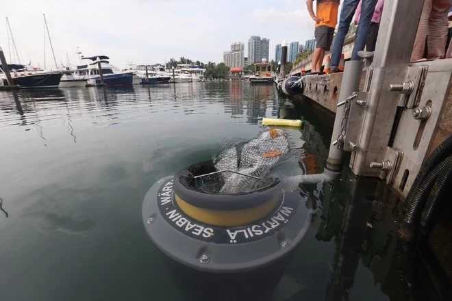

Pulitore di oceani

L'inquinamento dei nostri oceani con i rifiuti di plastica è un problema in continua crescita. Esistono diverse tecnologie progettate per aiutare a combattere questo problema pulendo i rifiuti dai mari, Seabin è una di queste soluzioni.
Questo semplice pezzo di tecnologia funziona come uno scarico, raccogliendo i rifiuti mentre si riversano sul bordo del bidone. Sistemi simili e su larga scala sono stati sviluppati per coprire parti più grandi dell'oceano e rimuovere i rifiuti, ma questo è un esempio semplice e brillante che amiamo.